Every plot of the package follows the same rules, so a figure made from one function matches the others:
| Theme |
theme_bioToolkit(): 11 / 9 / 12 pt text, 1 pt axes,
bold legend titles, transparent background |
| Size | panels have a fixed size in inches (panel.width,
cell.width, …), whatever the legend or number of
groups |
| Saving |
save_plot() sizes the file to fit the plot; PDF
(vector) or PNG at 1000 dpi |
| Colours | one cols argument: a palette name, or colours named by
group / from low to high |
| Gene names | in italics, symbols used as given (check the case for the organism) |
| Data |
export_source_data() writes the table behind any
plot |
The examples use PBMCs from Kang et al. 2018 (control or interferon-β, 8 donors; 8,000 cells), loaded by the guides’ data helper; any Seurat object works the same way.
pbmc <- docs_kang()
p <- DimPlot_bioToolkit(pbmc, group.by = "cell_type", label = TRUE)
p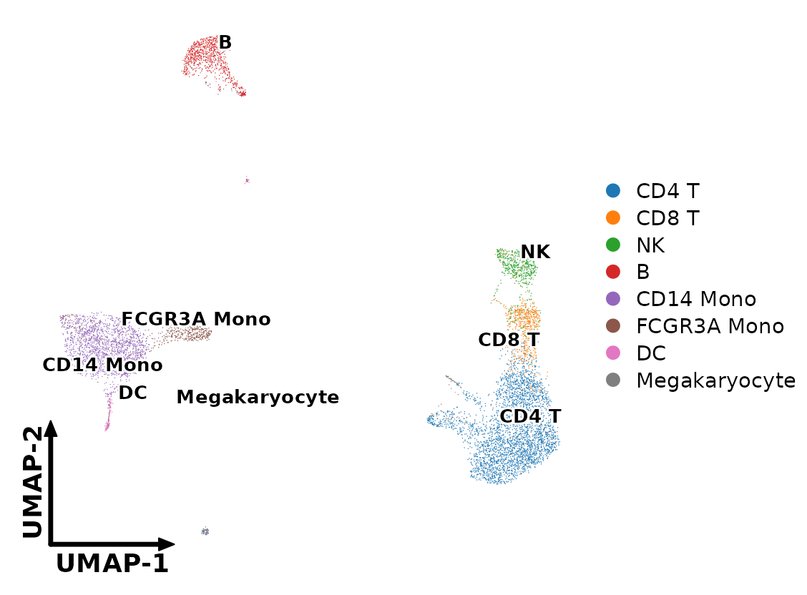
Theme
theme_bioToolkit() is used by all plots of the package
and can be added to any ggplot. Its type sets the layout. A
small simulated table for the examples:
Layouts
Axis lines and ticks, no grid: scatter, volcano, MA, bar and PCA plots.
ggplot(toy, aes(x, y, colour = group)) +
geom_point() +
theme_bioToolkit("axis") +
panel_size_theme(2)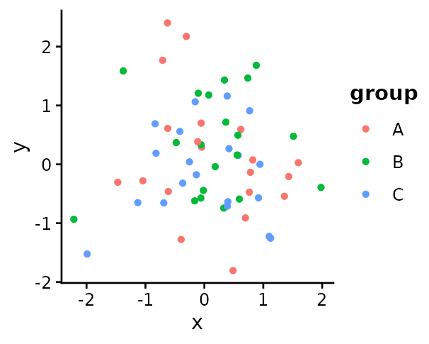
Light grid, rotated x labels, no axis titles: dot plots and heatmaps, whose rows and columns are categories.
ggplot(toy, aes(group, cut(x, 4), colour = y)) +
geom_point(size = 3) +
theme_bioToolkit("grid") +
panel_size_theme(1.2, 1.6)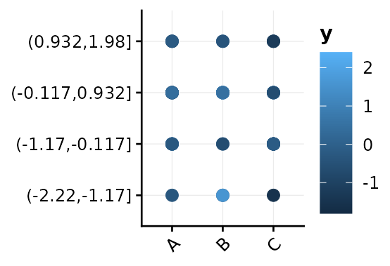
No axes, room for the dimension arrows: UMAP and t-SNE.
ggplot(toy, aes(x, y, colour = group)) +
geom_point() +
theme_bioToolkit("embedding") +
panel_size_theme(2)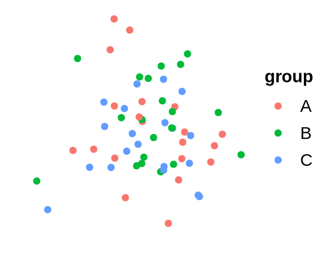
Fixed panel sizes
A panel has the same size in every figure, whatever the length of the labels or the size of the legend, so panels line up when figures are assembled. The package’s plots take the size in inches, in one of two ways:
| Argument | Plots | What it sets |
|---|---|---|
panel.width, panel.height
|
continuous axes: embeddings, volcano, MA, PCA, scatter | the whole panel. Scatter-type panels are square by default, so
panel.width alone resizes them |
cell.width, cell.height
|
categories: dot plots, heatmaps, violins, multi-volcano |
one column or row (one gene, one group). The panel
is the number of columns × cell.width
|
With cell sizes, a dot plot of 8 genes is twice as wide as one of 4, but a dot, a gene name and the gap between genes are the same size in both, so several dot plots in a figure match each other.
Sizes
DimPlot_bioToolkit(pbmc, group.by = "condition", panel.width = 2.5)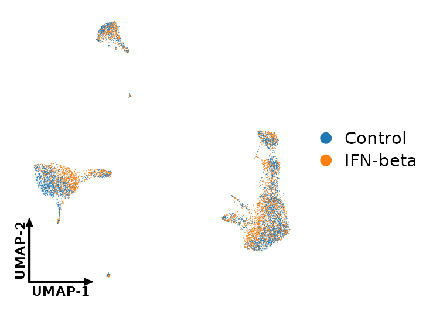
DotPlot_bioToolkit(
pbmc,
features = c("CD3E", "MS4A1", "CD14", "FCGR3A"),
group.by = "cell_type"
)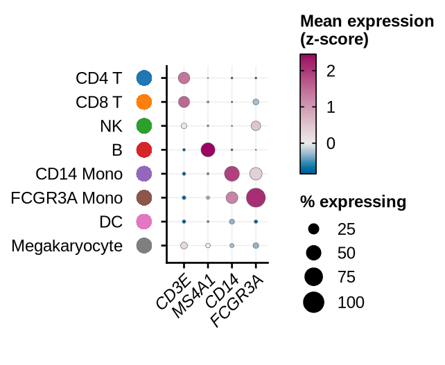
The same cells: the panel is twice as wide, every dot the same size.
genes_8 <- c("CD3E", "CD8A", "NKG7", "MS4A1", "CD14", "FCGR3A", "FCER1A", "PPBP")
DotPlot_bioToolkit(pbmc, features = genes_8, group.by = "cell_type")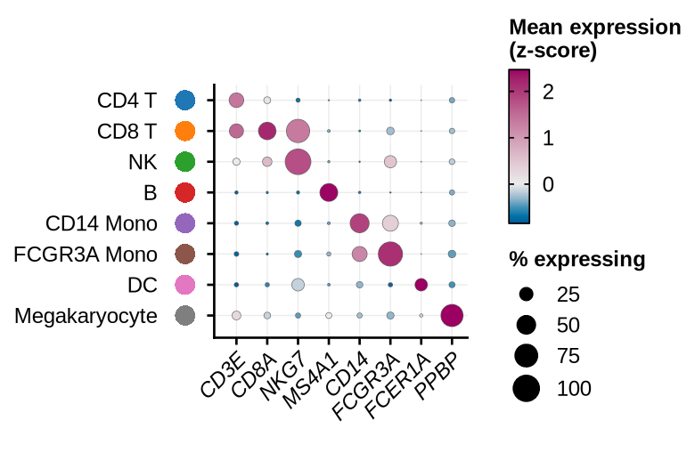
Larger cells make everything in them larger; dots scale with the cell size:
DotPlot_bioToolkit(
pbmc,
features = c("CD3E", "MS4A1", "CD14", "FCGR3A"),
group.by = "cell_type",
cell.width = 0.3,
cell.height = 0.25
)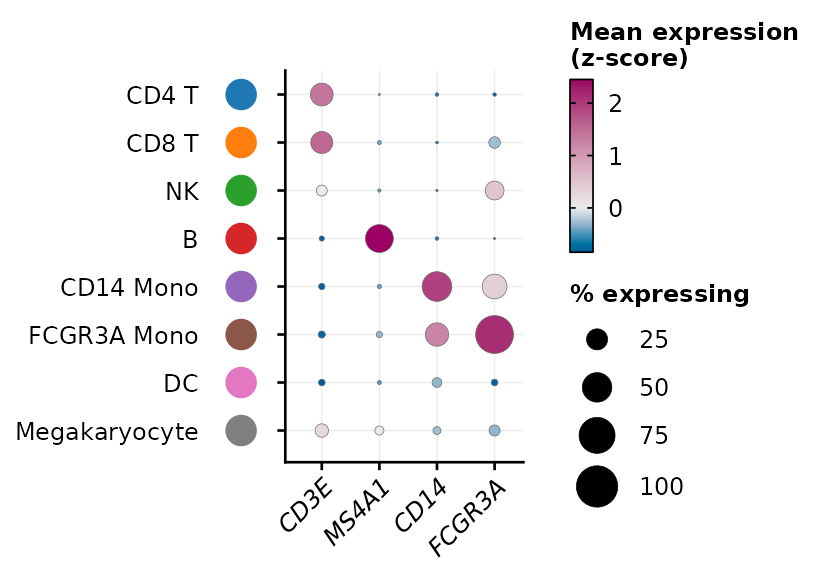
panel_size_theme() gives any ggplot the same
behaviour:
ggplot(toy, aes(x, y)) +
geom_point() +
theme_bioToolkit() +
panel_size_theme(panel.width = 3, panel.height = 1.5)Saving
save_plot() measures the plot and writes a file that
fits it, with nothing cropped and no white margin. The format comes from
the extension.
save_plot(p, "cell_types.pdf") # vector, for journals and editing
save_plot(p, "cell_types.png") # 1000 dpi raster
save_plot(p, "cell_types.jpg") # no transparency: saved on whitePDFs are written with cairo (cairo_pdf()), which embeds
the fonts and keeps a hyphen as a hyphen (base pdf() draws
it as a wider minus sign). Both PDF and PNG use the system’s default
sans-serif font.
Backgrounds are transparent by default
(bg = "transparent" in every plot), so figures can be
placed on any slide or panel; bg = "white" gives an opaque
one. Patchworks keep the size of every panel:
p_cond <- DimPlot_bioToolkit(
pbmc,
group.by = "condition",
cols = c("grey60", "#B5338A")
)
p | p_cond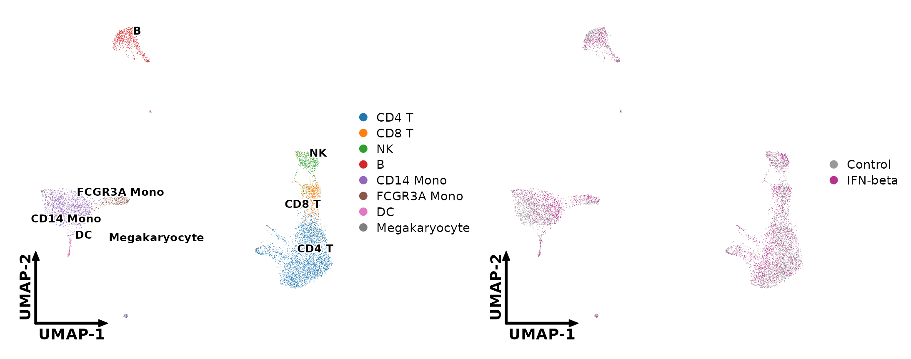
Dense layers (cells, genes of a volcano) are rasterized at 1000 dpi
once a plot has many points (raster,
raster.dpi), so PDFs stay small while axes and text stay
vector.
Legends as separate files
extract_legend() takes the legend out of a plot, for
figures where one legend serves several panels. By default the legend is
exactly as drawn in the plot; its arguments redraw it differently, with
ggplot2’s own legend settings.
Extracting
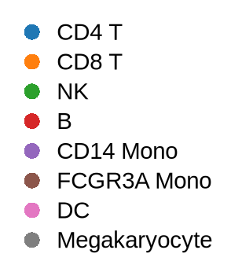
Keys in a row; several legends side by side:
extract_legend(p_cond, direction = "horizontal")The titles to the left of the keys, here of a dot plot’s two legends:
p_dot <- DotPlot_bioToolkit(
pbmc,
features = c("CD3E", "MS4A1", "CD14"),
group.by = "cell_type"
)
extract_legend(p_dot, title.position = "left")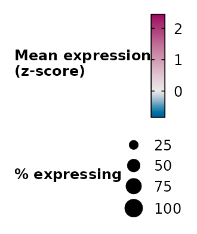
Any theme setting of the legend through ...,
e.g. smaller text, more space between keys, two columns of keys (a
ggplot2 guide):
two_cols <- guide_legend(ncol = 2, override.aes = list(size = 3))
p_two_cols <- p + guides(colour = two_cols)
extract_legend(
p_two_cols,
legend.text = element_text(size = 8),
legend.key.spacing.y = unit(2, "pt"),
legend.key.spacing.x = unit(8, "pt")
)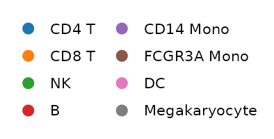
A plot with a colour bar and a size legend, e.g. a dot plot, gives
both, stacked or (direction = "horizontal") side by
side:
extract_legend(p_dot, direction = "horizontal")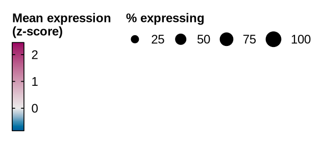
Saving
Save the plot without its legend, and the legend on its own:
leg <- extract_legend(p_cond)
save_plot(p_cond + theme(legend.position = "none"), "umap.pdf")
save_plot(leg, "umap_legend.pdf")Source data
Journals increasingly ask for the data behind each figure.
export_source_data() writes the table a plot is drawn from
(to CSV, or one sheet per plot of a patchwork to XLSX) and returns
it:
src <- export_source_data(p_cond)
head(src[[1]], 3)
#> row x y group highlight
#> 1 GCGGAGCTCTTACT-1 11.98873 0.4388136 Control TRUE
#> 2 AACTACCTAAGCCT-1 12.34284 -2.1304214 IFN-beta TRUE
#> 3 GAGGTTACACCTGA-1 10.95205 -1.5232978 Control TRUE
export_source_data(p | p_cond, "figure_2a.xlsx")For expression plots of a Seurat object, the table records the assay and layer the values came from.
Gene names in italics
Plots of genes set their names in italics by default
(italic.genes = TRUE) and leave metadata
(e.g. nCount_RNA) upright. For your own ggplots,
italic_labels() does the same for a discrete scale:
df <- data.frame(
feature = c("CD3E", "MS4A1", "nCount_RNA"),
value = c(3, 2, 1)
)
gene_labels <- function(x) italic_labels(x, x != "nCount_RNA")
ggplot(df, aes(value, feature)) +
geom_col(width = 0.6) +
scale_y_discrete(labels = gene_labels) +
theme_bioToolkit() +
panel_size_theme(2, 1)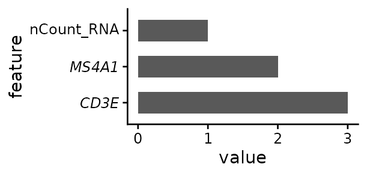
Symbols are drawn as given: human genes are upper case
(CD3E), mouse and rat genes title case (Cd3e).
Check the case of your object’s gene names before passing features.
Colours
Every plot has one cols argument with a good default. It
takes:
- for groups (cell types, conditions): a palette
name, or colours named by group, or in the order of the group levels.
The default is
"scanpy-20"(up to 20 groups;"scanpy-102"beyond); - for continuous scales (expression, scores, fold
changes): a palette name, or colours from low to high,
c(low, high)orc(low, mid, high).
Diverging scales (z-scores, fold changes, NES) keep their centre colour at 0 and stretch each side to its own end: when values run from -1 to 3, -1 gets the full low colour and 3 the full high colour, rather than -1 sitting in the pale middle of a symmetric -3 to 3 scale. Colour depth is then comparable within a side, not between sides; the colour bar shows where 0 is.
Picking colours
DimPlot_bioToolkit(pbmc, group.by = "cell_type", cols = "okabe-ito")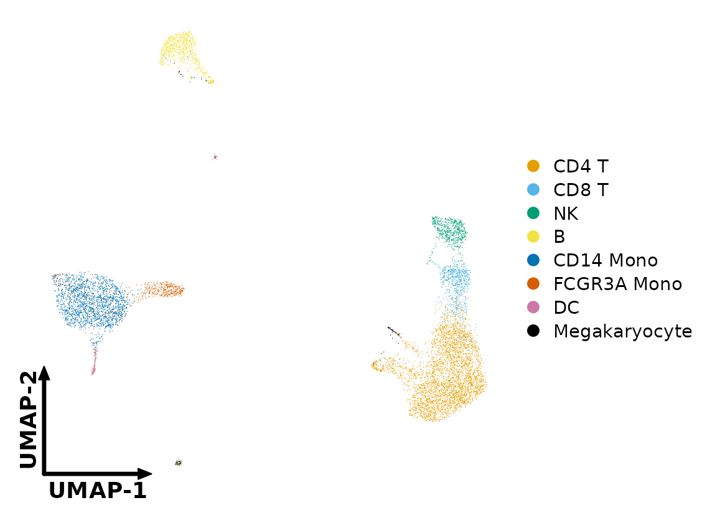
Pick colours by index (see show_palettes() below),
reorder them and name them by group, so that each cell type keeps its
colour in every figure:
cell_cols <- bt_palette("scanpy-20")[c(1, 2, 3, 5, 4, 6, 7, 8)]
names(cell_cols) <- levels(pbmc$cell_type)
DimPlot_bioToolkit(pbmc, group.by = "cell_type", cols = cell_cols)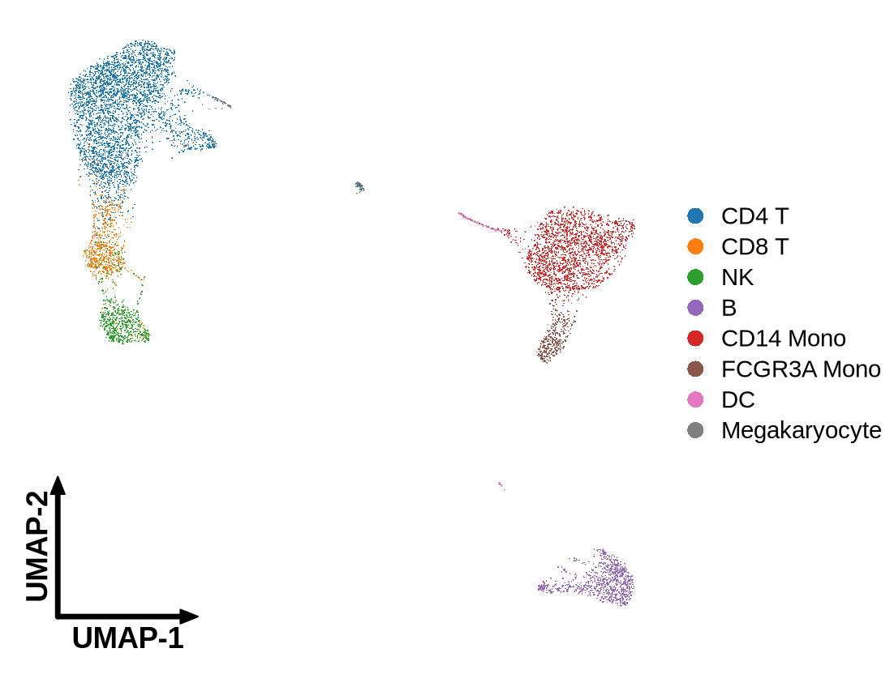
FeaturePlot_bioToolkit(
pbmc,
features = "ISG15",
cols = c("grey90", "#B5338A")
)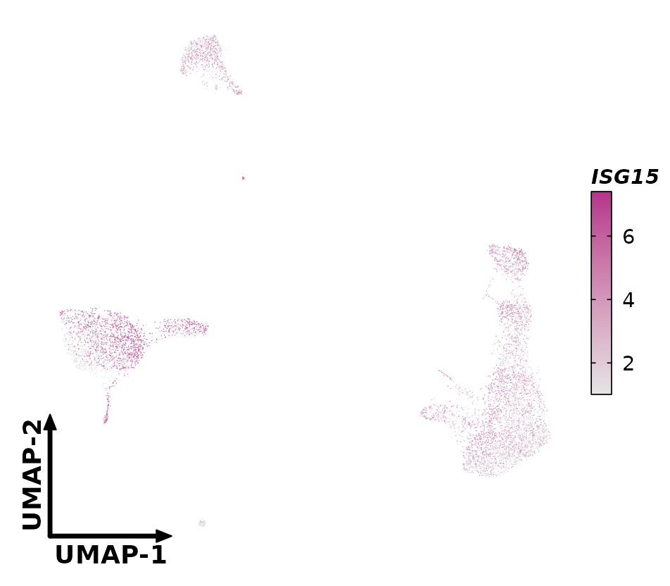
Browsing palettes
Every palette, with the index and hex code of each colour, its source
and the plots that use it by default, is on the Colour palettes page. In R,
list_palettes() lists the palettes with their type and
source; show_palettes() draws them with the index of each
colour (also your own colours, or a list of both), and
bt_palette() returns the colours. Add _r to
any name to reverse it.
head(list_palettes("qualitative"))
#> name type n
#> 1 scanpy-20 qualitative 20
#> 2 scanpy-20-cb qualitative 20
#> 3 scanpy-102 qualitative 102
#> 4 okabe-ito qualitative 8
#> 5 tol-bright qualitative 6
#> 6 tol-vibrant qualitative 6
#> source
#> 1 matplotlib 'tab10' (the colours scanpy uses for up to 10 groups) followed by the 10 lighter 'tab20' tones; D3 category10 / category20 (M. Bostock). Default for up to 20 groups
#> 2 scanpy default_20 for 11-20 groups (Wolf et al. 2018, Genome Biol 19:15): tab20 without greys, three colours adjusted for colour-blindness
#> 3 scanpy default_102 ('godsnot_102', maximally distinct colours, black removed). Default above 20 groups
#> 4 Okabe & Ito (2008), Color Universal Design; Wong (2011) Nat Methods 8:441. Colour-blind safe
#> 5 Paul Tol (2021), Colour schemes, SRON/EPS/TN/09-002, https://personal.sron.nl/~pault/. Colour-blind safe
#> 6 Paul Tol (2021), Colour schemes, SRON/EPS/TN/09-002, https://personal.sron.nl/~pault/. Colour-blind safe
show_palettes(c("scanpy-20", "okabe-ito", "npg"))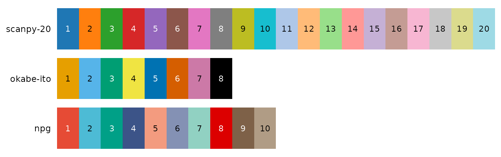
show_palettes(list(mine = cell_cols, "okabe-ito"))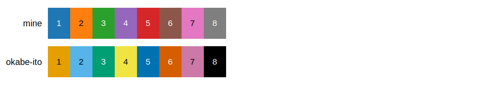
bt_palette("scanpy-20")[c(1, 3, 2)]
#> [1] "#1F77B4" "#2CA02C" "#FF7F0E"
bt_palette("viridis", n = 5)
#> [1] "#440154" "#3B528B" "#21908D" "#5DC863" "#FDE725"Colour vision deficiency
About 8% of men have red-green colour blindness.
check_palette() simulates it and warns about pairs of
colours that become hard to tell apart:
check_palette(cell_cols)
#> Warning: 4 pair(s) of colours are hard to tell apart:
#> #1F77B4 / #9467BD (deutan, Delta E 7.8)
#> #2CA02C / #D62728 (deutan, Delta E 7.3)
#> #1F77B4 / #9467BD (protan, Delta E 5.3)
#> #FF7F0E / #2CA02C (protan, Delta E 4.8)Other colour helpers
# Weighted mix of colours
mix_colors(c("#2C5DA8", "#B5338A"))
#> [1] "#704899"
mix_colors(c("#2C5DA8", "#B5338A"), weights = c(3, 1))
#> [1] "#4E52A0"
# Order by hue
sort_colors_by_hue(bt_palette("okabe-ito"))
#> [1] "#D55E00" "#E69F00" "#F0E442" "#009E73" "#000000" "#56B4E9" "#0072B2"
#> [8] "#CC79A7"
# ggplot2's default hues
ggplot_colors(4)
#> [1] "#F8766D" "#7CAE00" "#00BFC4" "#C77CFF"ggplot_colors() reproduces ggplot2’s default colours for
n groups, e.g. to keep the colours of plots made with
Seurat’s defaults. (It was called ggplotColours() before
1.0.0; the old name still works, with a deprecation warning.)